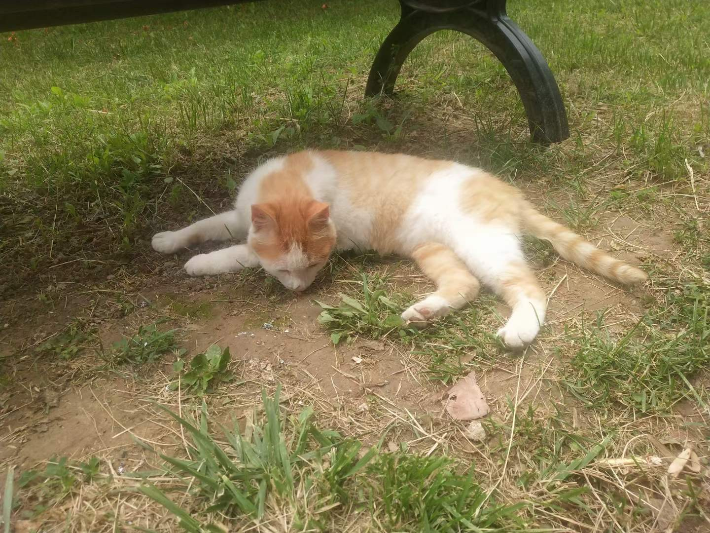
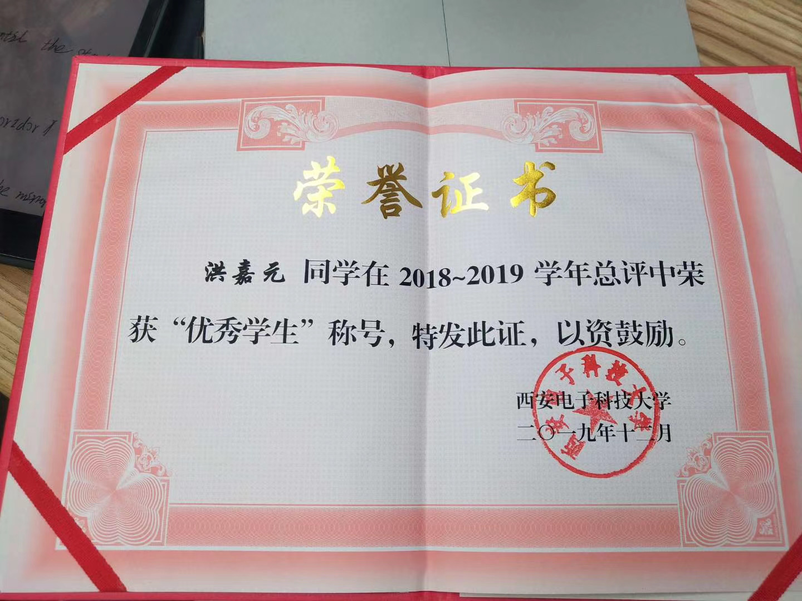
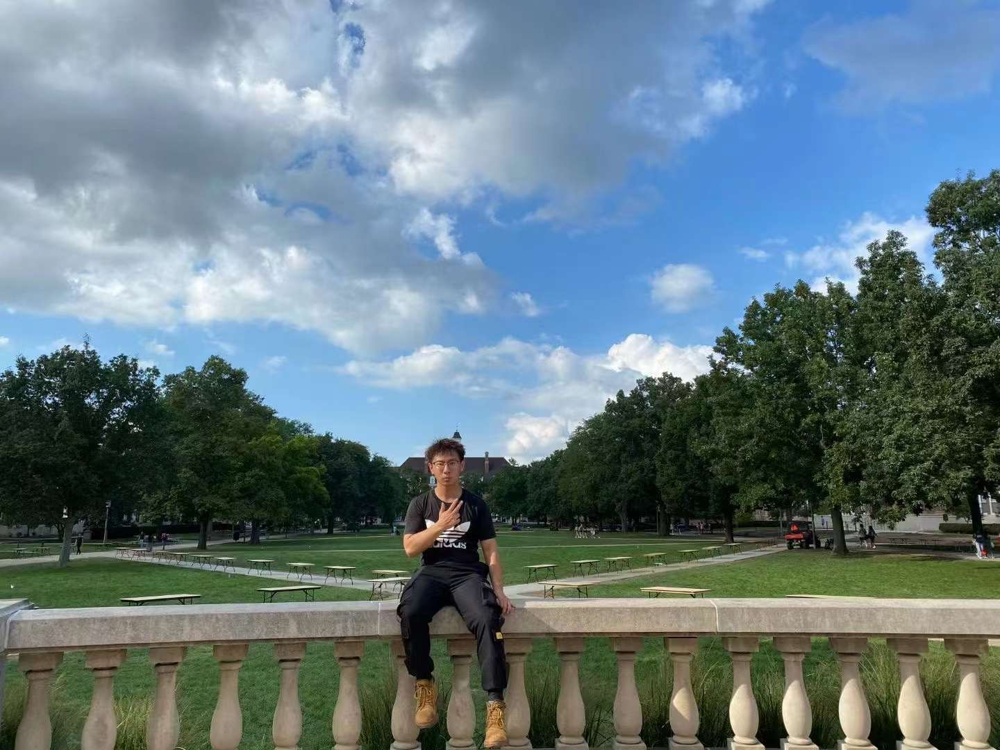
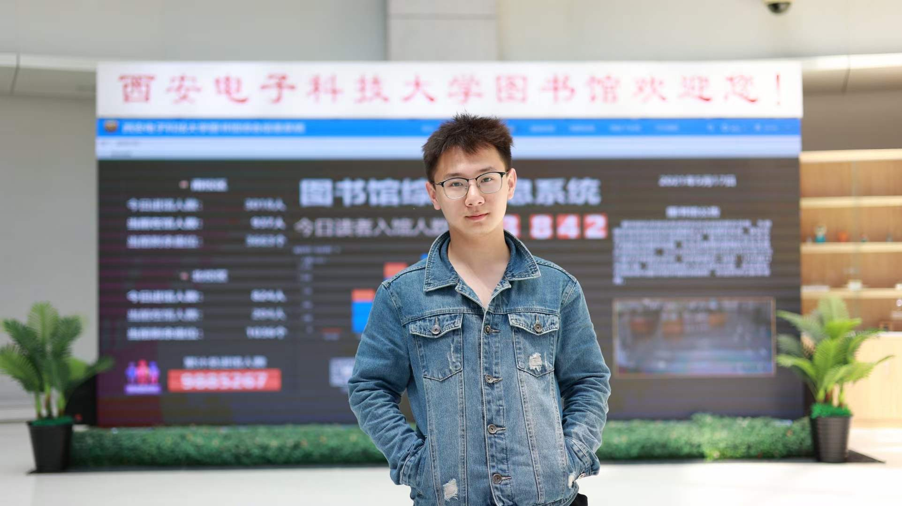
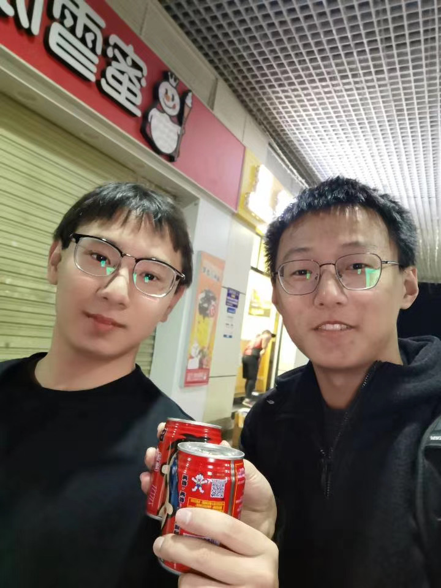

Champaign, IL
I went to University of Illinois, Urbana Champaign, IL, USA on August 2021. This is the most beautiful campus I have ever seen in my life! I was admitted as Mathematics, but I want to transfer to Math + CS. In the first semester in UIUC, no one knows how much bad feelings I have in 2021 Fall that semester. I sometimes cry in the evening for my useless not only in study but also in interaction with people. I missed my home, my family, my friends in China so much! And I don't think I have good friends here, feeling lonely and hopeless. Finally, after one-semester's hard working, overcoming CS 241 (System Programming) and CS 357 (Numerical Analysis) and emtional issues. In the end, I have a GPA of 3.94 and got the chance to transfer to Math + CS in LAS. And as a reward, my father promised me to buy me my first car!! (More details in Life Section). However, I missed the best time to find internship from August to December. All right, then just get well with the courses. I selected CS 411 (Database System) and that course helped me in my programming development, especially for my resume. And now I'm looking for 2023 Summer Software Engineering Internship! Let's go ahead and charge forward!
I went to Xidian University, Xian, China on August 2019 I was admitted as Computer Science after Chinese SAT (called Gaokao). I had a lot of fun here, accquainted my best friend here. I also joined our university rowing team and attend the Champaignship. And after two years' of study, I determined to transfer to a university in United States! That thing has never ever happened in our Xidian University history. And I prepared everything on my own and I succeeded it! I also help other students to transfer and learn English. I also had a three-month internship with my best friend during winter vacation. I love this university, although I cannot graduate from here, I cherish my lovely classmates and knowledgable professors. Most importantly, the delicious food!!! I also missed the cute cat Mimi! QwQ!
Ruochen Chai, a very knowledgeable and smart boy. He is not only my best friend, but also like a mentor for me, taught me a lot of things like philosophy and psychology. Hope to see you again, brother! 👬
Above is my XDU First Prize Scholarship
Aug 2021 - Dec 2023
Aug 2019 - Jun 2021
Mimi always wait for me after class!
Missed you so much!!! 🥺
217-200-0555
hjy-albert
jh79@illinois.edu